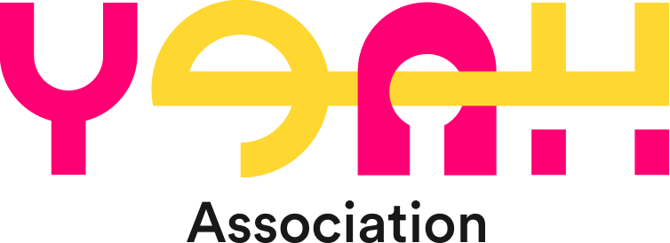

Grey areas = photo placeholders · TH/EN toggle in the header (TH default) · the portal reuses the landing page's palette, type and chrome
Desktop and mobile are two separate files, as the PRD requires. Mobile uses a five-step wizard with bottom sheets for every long option list, and on the hub a hamburger menu that matches the landing page; desktop uses one dense form and puts the hub sections in the top nav. Use the tabs above to jump between the three screens; the Google button on login plays the key-unlock sign-in transition and lands on registration, and finishing registration lands on the member hub. Use the replay buttons to watch it on either frame.
Data contract. Every input carries the field name the backend receives, and every rendered record carries its id — data-program-id, data-application-id, data-participation-id, data-field — so the same data can be read out of the markup without any of it being visible on screen. Full field list, enums and endpoints: YEAH Portal Data Contract.md.
Sign-in transition. Clicking through on the login screen plays a full-screen key unlock before the auth step, on both platforms. The yellow key element flies in from off-screen, threads the keyhole in the A — behind the letter's left leg, in front of its right — then turns 90° about its own shaft so the round bow goes edge-on and leaves the straight bar of the unlocked wordmark. A horizontal flare rips across the frame and blooms into the white loading screen. Blank white at 1.3s, then an 850ms hold standing in for the real Google round-trip — that hold is the only number to change when live auth goes in. Mobile runs the same beats with the mark sized to the phone and a flare shaped for a portrait frame. Both respect prefers-reduced-motion, which skips to a still unlocked mark and a short wash.
Membership card. The member hub shows a virtual membership card, one design per tier — General, Explorer, Builder, Leader, Catalyst — drawn from the card artwork at 856 × 540 with its drop shadow. Desktop has it in the profile header; mobile has it at the top of the member-status tab, with Share and Edit profile side by side underneath. For this MVP, picking a tier in the member-status section switches the card to that tier's design; in production the card follows member.membership_level. Card text follows the TH/EN toggle: Thai is set in Poppins with Prompt carrying the Thai glyphs, English in Ibrand with the system sans as fallback. Tap the photo circle on the card to add a picture; it stands in for the upload to member.avatar_url and is not saved on reload.
Rocket variant. The mobile login previously launched a pink rocket that climbed off the top of the screen and filled the frame with its exhaust. It is archived intact at YEAH Portal Mobile Rocket.html — one commented line in this file's script swaps the mobile frame back to it.
Deep links. Both files accept ?screen=login|register|hub and &launch=1, which auto-plays the sign-in transition once on load (this is what the replay buttons use); mobile also takes &tab=status|programs|history|profile and &step=1–5. Both take &tier=general|explorer|builder|leader|catalyst to open the hub previewing that tier and its card.